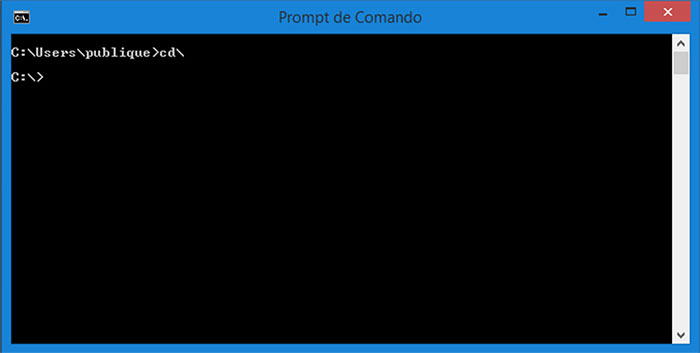

Os softwares de código fechado, ou Closed Source, são os sistemas amplamente usados pelos fabricantes de programas, onde o acesso aos códigos é restringido, podendo ser acessado ou alterado apenas por pessoas previamente autorizadas, como os programadores.
O modo texto, seria basicamente, o sistema operacional sem a interface gráfica, sendo utilizado somente em modo terminal para digitar comandos. Aqui podemos realizara lgumas funções utlizando comandos execíficos para o que queremos executar.
Você pode por exemplo criar, navegar e remover pastas (diretórios), além de chamar comandos específicos de alguns programas instalados no seu computador.Para abrir o Prompt de Comandos, clique em iniciar e digite CMD; Na linha de comandos ao lado, está indicada a pasta atual. Para mover uma pasta acima, usamos o comando cd .. (cd e ponto, ponto) ou pode ser usado tmb o cd ../ ( cd , ponto, ponto e barra ).
No exemplo acima, estamos na pasta C:\Users\publique\ . Ao subir o diretório com o comando cd .. , passamos para a pasta C:\Users\ , que é o diretório anterior à C:\Users\publique\ . Para entrar novamente em C:\Users\publique\ , use o comando: cd publique Ir para a pasta raiz utilizamos o CD\
Em informática, interface gráfica do utilizador ou usuário (abreviadamente, o acrônimo GUI, do inglês Graphical User Interface)
é um tipo de interface do utilizador que permite a interação com dispositivos digitais por meio de elementos
gráficos como ícones e outros indicadores visuais, em contraste a interface de linha de comando. Foi criada pela Xerox mas somente se tornou um produto com a Apple.
Após iniciar o Windows, a primeira coisa com que nós nos deparamos é a área de trabalho, também conhecida como desktop
A área na tela em que você trabalha. É nela onde você poderá guardar todas as suas pastas de trabalho contendo seus documentos (desenhos, ofícios, relatórios, planilhas, bancos de dados, gráficos, músicas, etc).
Para acessar o menu de ajuda:
Para Renomear as pastas do windows, Você deve selecionar a pasta ou arquivo e clicar com o botão direito do mouse, aparecerá uma janela na qual você deve escolher a opção renomear.
Exixtem alguns Programas para a edição e manipulação desse arquivos:

Assistência Rápida, Bloco de notas, Calculadora, Notas Autoadesivas, Ferramenta de Captura, Internet Explorer, Windows Explorer, Word Pad...
Office: word, Exel, Power Point, Outlook, Access, Publisher, Skyp for Business, InfoPath...
O Windows Update é um serviço de atualização da Microsoft para os sistemas operacionais Windows.
O nível Básico reúne um conjunto limitado de informações que são fundamentais para compreender o dispositivo e sua configuração, incluindo: informações básicas do dispositivo, informações relacionadas à qualidade, compatibilidade de aplicativo e Microsoft Store. Quando o nível estiver definido como Básico, ele também incluirá as informações do nível de Segurança. O nível Básico ajuda a identificar problemas que podem ocorrer a configuração de hardware ou software de um dispositivo específico. Por exemplo, ele pode ajudar a determinar se falhas são mais frequentes em dispositivos com uma quantidade específica de memória ou que estejam executando uma versão específica de um driver.